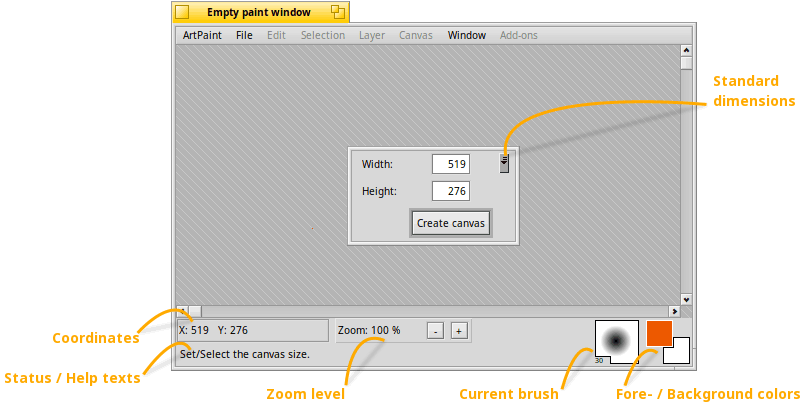

The main window
This is the main window, as it appears when ArtPaint is launched or you start a new project:

You're asked for the and of the new canvas. The little widget to the right of the text box offers some standard dimensions. After clicking you can start painting.
Below the canvas is a bar offering:
- Coordinates of the mouse pointer
- Status / Help texts for the currently selected tool, add-on, or the menu item under the mouse pointer.
- Zoom level shows a slider when clicked to set an arbitrary magnification, or in/decrease by 25% when clicking the / buttons.
- Two color panes show the fore- and background colors. You can switch them with a right-click and change their color with a left-click which opens the Colors window.
- Color sets offer direct access to colors. A left-click sets the foreground, a right-click the background color. The little arrow widgets let you switch between several sets you can create in the Colors window.
Back: The index Next: The menus